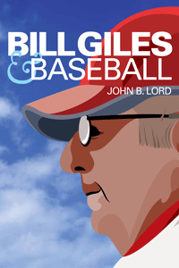

<body bgcolor="#FFFFFF" text="#000000" link="#0000FF" vlink="#CC0000" alink="#CC0000"><center><hr width="350" size="1" align="center" noshade>The extraordinary story of the man who helped bring a World Series championship back to Philadelphia<hr width="350" size="1" align="center" noshade><p><a href="https://cdcshoppingcart.uchicago.edu/Cart/ChicagoBook.aspx?ISBN=9781439907863&&PRESS=temple" target="_top">Buy this book!</a> | <a href="https://cdcshoppingcart.uchicago.edu/Cart/Cart.aspx?PRESS=temple" target="_top">View Cart</a> | <a href="https://cdcshoppingcart.uchicago.edu/Cart/Cart.aspx?PRESS=temple" target="_top">Check Out</a></p><p></p></center><!--none//--><h1>Bill Giles and Baseball</h1>
<h3>John B. Lord</h3>
<P>cloth 1-4399-0786-2 $35.00, Apr 14, <FONT COLOR=#990033>Available</FONT>
<br>Electronic Book 1-4399-0788-9 $35.00 <FONT COLOR=#990033>Available</FONT>
<BR> 328 pp
6x9
</P><BLOCKQUOTE><I>"It boggles the mind to contemplate all the ways in which Bill Giles has left his imprint on the landscape of baseball, and not just in Philadelphia. Without Bill Giles, there might be no such thing as wild cards and interleague play. Without Bill Giles, Philadelphia might never have seen Citizens Bank Park or had the joy of listening to the great Harry Kalas. In </I>Bill Giles and Baseball<I>, John Lord eloquently captures the many contributions of this remarkable man."</i><br>&#151<b>Jayson Stark</b>, senior baseball writer, ESPN.com</I></BLOCKQUOTE>
<P>Bill Giles oversaw one of the greatest eras of winning that the Philadelphia Phillies ever enjoyed and helped guide major league baseball through the most turbulent era in its history. In <I>Bill Giles and Baseball</I>, John Lord deftly chronicles Giles’ remarkable career—which includes 44 years with the Phillies—to provide an insider's view of the business of the sport. He addresses the often controversial, sometimes ill-advised, moves by baseball’s hierarchy that have nonetheless propelled the game to unimagined economic growth.
<P>Based on fascinating and extensive interviews, <I>Bill Giles and Baseball</I> spans Giles’ extraordinary life in baseball, from his childhood growing up in the game to the tumultuous years he spent as the president and managing partner of the Phillies. Purchasing the team in 1981, just after baseball experienced its first serious labor stoppage, Giles watched baseball add franchises, grapple with the player’s union, realign the leagues, and restructure baseball’s postseason. Lord shows how Giles skillfully navigated these tumultuous events. But as the public face of the Phillies championship teams of 1980, 1983, and 1993, Giles is best remembered for his critical role in creating innovative television deals and for leading the efforts to build the Phillies’ beautiful new ballpark.
<P><I>Bill Giles and Baseball</I> offers a penetrating behind-the-scenes look at the business of baseball as seen through the eyes of one of the architects of the game. Lord showcases the unique perspective of Giles, who tried to advance both the game he loves and the baseball industry itself despite the controversies and conflict that baseball faced during his era.
<BR>&nbsp;<h2>Excerpt</h2><P>Excerpt available at <a href="http://www.temple.edu/tempress">www.temple.edu/tempress</a></p>
<BR>&nbsp;<h2>Reviews</h2>
<p><i>"Baseball has been through a turbulent time with the dawning of free agency, the explosion in player salaries and TV revenue and even a work stoppage that wiped out a World Series. Bill Giles has seen it all and, as a baseball lifer, he has helped steer the game through its many ups and downs and also shaped its future. In </I>Bill Giles and Baseball<I>, John Lord takes the reader inside the deal-making and power-playing that is part of major league baseball today."</i>
<br>&#151<b>Ray Didinger</b>, Analyst, Comcast SportsNet
<p><i>"[Lord] has made valuable contributions to both Philadelphia and the overall structure of baseball.... For baseball fans, this book is informative and well written and gives you a look at how the baseball establishment runs itself. I don’t think you get many opportunities to see how they function like this one. It also shows how important Bill Giles is to the game we see on the field today."</i><br>&#151<b><i>Gregg's Baseball Bookcase</i></b>
<p><i>"Lord recounts where Giles stood on various issues, whether it was Commissioner Fay Vincent, or interleague play.... [Lord] reveals his comfort with discussing the intricacies of the business of baseball.... [T]his is the type of 'industrial' history that baseball studies sorely needs. This book is recommended for baseball history courses as one of the best books on how the game has evolved since 1980."</i> <br>&#151<b><i>The Journal of Sports History</i></b>
<BR>&nbsp;<h2>Contents</h2><P>
<p>Acknowledgments
<br>
<br>Introduction
<br>
<br>1. A Rapid-Fire Exposition of the Business of Baseball from the Beginning to 1981
<br>2. Bill Giles and Major League Baseball’s Network TV Deals, 1983–1995
<br>3. Collusion
<br>4. The Rise and Fall of Fay Vincent
<br>5. Era of Unrest: The Strike of 1994 and the 1996 Collective Bargaining Agreement
<br>6. Expansion, Realignment, and Interleague Play: Bringing Baseball into the 1990s
<br>7. The Evolution of Baseball’s Governance System
<br>8. Toward a New Era of Labor Peace: The 2002 Collective Bargaining Agreement
<br>9. Bill Giles and His Baseball Team
<br>10. Bill Giles and His Ballparks
<br>11. From the Depths of 2002 to the Heights of 2012: Nine Reasons Why Baseball Is Booming
<br>
<br>Notes
<br>Bibliography
<br>Index
</P><BR>&nbsp;<H2>About the Author(s)</H2>
<P><b>John B. Lord</b> is Professor of Marketing and Director of Sports Marketing at Saint Joseph's University. He is the co-editor (with Aaron L. Brody) of <i>Developing New Food Products for a Changing Marketplace</i> and contributor to <i>Strategic Management: A Cross Functional Approach</i>.</P>
<BR><H2>Subject Categories</H2>
<p><A HREF="/tempress/sports.html" TARGET="_top">Sports</a>
<BR><A HREF="/tempress/business.html" TARGET="_top">Business/Economics</a>
<BR><A HREF="/tempress/philly.html" TARGET="_top">Philadelphia Region</a>
</p>
<p align="center"><a href="https://cdcshoppingcart.uchicago.edu/Cart/ChicagoBook.aspx?ISBN=9781439907863&&PRESS=temple" target="_top">Buy this book!</a> | <a href="https://cdcshoppingcart.uchicago.edu/Cart/Cart.aspx?PRESS=temple" target="_top">View Cart</a> | <a href="https://cdcshoppingcart.uchicago.edu/Cart/Cart.aspx?PRESS=temple" target="_top">Check Out</a></p><p><font face="Arial" size="1"><a href="copyright.html" onMouseOver="window.status='Web Copyright Policy';return true;" onMouseOut="window.status=''" title="Web Copyright Policy">&copy;</a> 2015 <a href="http://www.temple.edu" target="new" onMouseOver="window.status='Link to Temple University home page';return true;" onMouseOut="window.status=''" title="Link to Temple University home page">Temple University</a>. All Rights Reserved. http://www.temple.edu/tempress/titles/2178_reg.html</font></p>